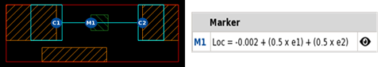
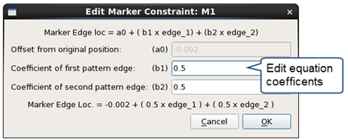

Adding a Marker Constraint
Marker constraints specify the separation between a custom maker edge and a moving pattern edge. Marker constraints are only valid in TEM patterns.
See “Marker Constraints” for information and examples.
Prerequisites
A pattern library is open in the Calibre Pattern Matching GUI. See “Invoking the Calibre Pattern Matching GUI”.
A TEM pattern is selected in the pattern list. The pattern should have the following:
A custom marker. See “Adding Markers to a Pattern”.
At least one pattern edge with a single edge constraint. See “Adding a Single Edge Constraint”.
Procedure
- Click the Add
Edge to Edge Constraint (
 ) above
the pattern canvas.
) above
the pattern canvas. - (Optional)
Do the following to constrain the marker edge at a relative position
between two moving pattern edges.
These steps assume the marker edge from Step 3 is being constrained. Also see Figure 3 in the topic “Marker Constraints.”
- Click
the Add Edge to Edge Constraint () button.
- Click the custom marker edge from Step 3, which already has a marker constraint.
- Click
the second pattern edge that determines the marker position. The
pattern edge should have a single edge constraint.
The existing marker constraint is updated to include the additional constraint to the second pattern edge. The constraint equation is determined automatically by the GUI according to the current edge positions.
 - (Optional)
Double-click the constraint listing to edit the equation parameters.
You can change the equation coefficients to give more or less weight
to a pattern edge. 
- Click
the Add Edge to Edge Constraint (